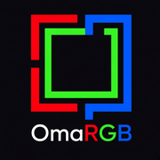
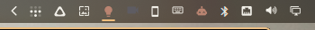
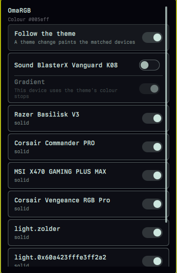

OmaRGB
Paints RGB hardware from the active Omarchy theme. Keyboards, mice, memory, motherboard lights, a Corsair hub, laptop keyboards, and Home Assistant lamps each get a colour the theme already contains.
Install
git clone https://github.com/ekollof/OmaRGB.git
cd OmaRGB
./install.shThe installer links omargb onto PATH, hooks theme changes, and steps in front of Omarchy's own RGB commands. omargb plan shows the match and changes nothing. omargb apply paints.
On the bar
The lightbulb opens the same choices: follow the theme or leave a device alone, and a solid colour or the theme gradient where the hardware can show one.


Wiki
- Devices. What the database paints, which OpenRGB keyboards need no row, and what has actually been tried.
- Engines. How to set up each painter, including Home Assistant's
hass.cfg. - Extending. Add a device, or add an engine, without inventing a colour.
- From Omarchy. The painters OmaRGB takes over, and the parts it does on purpose differently.